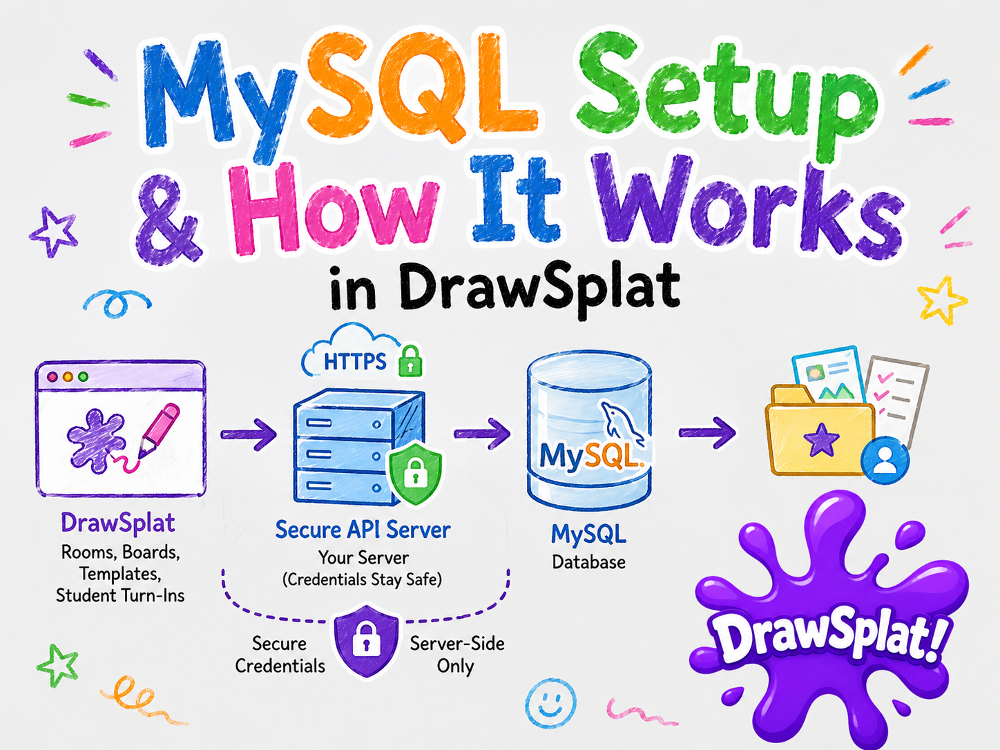

District installation · Database guide
MySQL / MariaDB setup
Run your district’s whiteboard, private saving, classrooms, assignments, and student turn-ins on infrastructure you control. MariaDB and MySQL use the same DrawSplat saving API.
Start with the complete district package
Download the complete district suite, extract it, and open start-here.html. Choose Docker (preferred) or a native installation, then review the components. All components are selected initially; uncheck anything your district does not need.
The district installation guide includes the Quick Start checklist, Docker installation, both launch paths, Google sign-in, domain setup, backups, and recovery.
Choose your installation path
- Docker: the Bash/BAT launcher manages Node.js, the saving API, Caddy, and a bundled MariaDB 11.8 database (or MySQL 8.4). No separate host Node.js or PHP installation is needed.
- Without Docker: install Node.js 22+, Caddy 2, and MariaDB 11.8 or MySQL 8.4. Create an empty utf8mb4 database and a dedicated application user. The native launcher runs the API and gateway together; the database runs as an operating-system service.
- Existing or managed database: use your own database connection during web setup. Keep credentials server-side, verify remote TLS, and permit schema migrations as well as normal record access.
Launch and finish first-time setup
- Save the installation plan. If the browser downloads it elsewhere, pass its full path to the launcher with
--plan "/path/to/drawsplat-district-plan.json". Confirm the launcher reports the applied plan. - In the extracted
drawsplatfolder, runbash start-district.sh(Windows:start-district.bat) for Docker, orbash start-native.sh(Windows:start-native.bat) for native hosting. - Open
http://localhost:8080/setupand enter the private setup key printed by the launcher. Keep it out of recordings and shared screenshots. - For Docker’s default database, select Bundled database. Connection overrides are disabled and ignored by the server in this mode, including browser-autofilled values. For native or external hosting, select My own database and supply your database settings.
- Test the connection. A healthy database container alone does not prove that the API can authenticate. Follow the safe diagnostic message if the test fails.
- Choose your district administrator email and password and save them privately. The starter email is
admin@localhost.test; its password is generated uniquely and masked. There is no universal default password. Replace the email with your administrator’s address. - Complete setup and sign in as the district administrator. Verify saving, classrooms, backup, and restart before classroom rollout.
Rerunning a launcher preserves existing configuration and data. Keep the existing database engine; changing a dropdown does not migrate a database. Never remove database volumes to troubleshoot an ordinary connection error.
Understand the accounts
- District administrator: the account created during installation manages teachers and rosters at District roster administration.
- Teachers and students: roster-linked school accounts sign in with Google after the district configures its web client ID, allowed school domains, and authorized origin. Importing a CSV does not create a shared password or a Google account.
- Teacher Admin interface lock: a separate local settings gate, not a district account or database password. Teachers on a configured district installation do not need this lock password to begin teaching.
Import rosters and begin teaching
Use the district classrooms and roster guide to add teachers, preview CSV imports, and create classes. Teachers use Options → Get Started with Your School or File → Online classrooms. Students see their enrolled classes and their own submissions. Teachers publish assignments and review submitted work with feedback.
Google sign-in identifies the school account; MariaDB/MySQL stores this district work. It does not require an Apps Script deployment. Google Apps Script shared-room sync, cloud template galleries, and its Compliance Console remain a separate integration.
What gets saved?
File → Save online saves your account’s private board pages, objects, and added audio/video notes. Saving is explicit; browser autosave alone stays on the device. Choose Add to place a stopped recording into the board before saving. Local recording drafts normally remain recoverable for 24 hours.
The default board limit is 20 MB. Recordings currently live inside board JSON. If another device has saved a newer revision, save your work to a local file before reopening the online copy. A student launch link configures the connection and lesson settings; it does not expose a teacher’s private board or credentials.
Production checks and recovery
- Use HTTPS on a district domain; keep database ports private and remote certificate verification enabled.
- Back up both the database and private configuration, including the password pepper. Protect backups and test restoration to a separate installation.
- Confirm administrator login, teacher/student role boundaries, Save/Open, assignments, feedback, and data surviving restart.
- Sign out on shared devices and follow a local-data cleanup routine: account sign-out leaves device copies.
- Test your expected classroom load. No validated district-wide CPU/RAM or concurrency minimum has been established.
See district backup and recovery. For a separately hosted saving API, use the advanced hosting, TLS, and migration reference; the district package is the recommended starting point for an entire school installation.